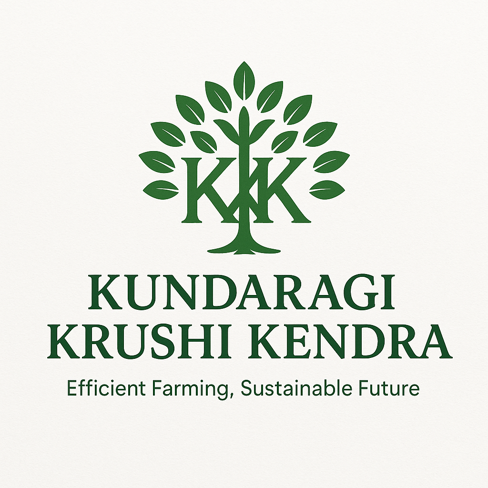

Gallery



Efficient Farming, Sustainable Future
Kundaragi Krushi Kendra is dedicated to promoting sustainable and efficient agricultural practices. We specialize in drip irrigation systems, helping farmers maximize crop yields while conserving water. With deep roots in the farming community, we aim to be a reliable partner in your agricultural journey.
ಕುಂದರಗಿ ಕೃಷಿ ಕೇಂದ್ರವು ಸಸ್ಯೋತ್ಪಾದಕ ಕೃಷಿ ಪದ್ಧತಿಗಳನ್ನು ಉತ್ತೇಜಿಸಲು ಮತ್ತು ಡ್ರಿಪ್ ನೀರಾವರಿ ವ್ಯವಸ್ಥೆಗಳಲ್ಲಿ ಪರಿಣತಿಯನ್ನು ನೀಡಲು ಬದ್ಧವಾಗಿದೆ. ನಾವು ನೀರನ್ನು ಉಳಿಸಿಕೊಂಡು ಬೆಳೆ ಉಪಜವನ್ನು ಹೆಚ್ಚಿಸಲು ರೈತರಿಗೆ ಸಹಾಯ ಮಾಡುತ್ತೇವೆ.
We provide a full range of drip irrigation products from trusted brands:
ನಾವು ನಂಬಿಗಸ್ತ ಬ್ರಾಂಡ್ಗಳಿಂದ ಡ್ರಿಪ್ ನೀರಾವರಿ ಉತ್ಪನ್ನಗಳ ಸಂಪೂರ್ಣ ಶ್ರೇಣಿಯನ್ನು ಒದಗಿಸುತ್ತೇವೆ:
Phone: +91-XXXXXXXXXX
Email: contact@kundaragikrushikendra.com
Address: Your Farm Road, Kundaragi, Karnataka
ದೂರವಾಣಿ: +91-XXXXXXXXXX
ಇಮೇಲ್: contact@kundaragikrushikendra.com
ವಿಳಾಸ: ಯುರ್ ಫಾರ್ಮ್ ರಸ್ತೆ, ಕುಂದರಗಿ, ಕರ್ನಾಟಕ